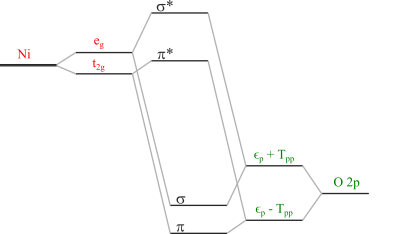

Note
Go to the end to download the full example code.
Charge-transfer energy for NiO¶
This example follows the Anderson impurity model for NiO XAS example and considers the same model. This time we outline how to determine the charge transfer energy in the sense defined by Zaanen, Sawatzky, and Allen [1]. That is, a \(d^{n_d} \rightarrow d^{n_d + 1} \underline{L}\) transition in the atomic limit, after considering Coulomb interactions and crystal field. Although this can be determined analytically in some cases, the easiest way is often just to calculate it, as we will do here.
import edrixs
import numpy as np
import matplotlib.pyplot as plt
import scipy
import example_3_AIM_XAS
import importlib
_ = importlib.reload(example_3_AIM_XAS)
Determine eigenvectors and occupations¶
The first step repeats what was done in Ground state analysis for NiO but it does not apply the hybridization between the impurity and both states.
from example_3_AIM_XAS import (F0_dd, F2_dd, F4_dd,
nd, norb_d, norb_bath, v_noccu,
imp_mat, bath_level,
hyb, ext_B, trans_c2n)
ntot = 20
umat_delectrons = edrixs.get_umat_slater('d', F0_dd, F2_dd, F4_dd)
umat = np.zeros((ntot, ntot, ntot, ntot), dtype=complex)
umat[:norb_d, :norb_d, :norb_d, :norb_d] += umat_delectrons
emat_rhb = np.zeros((ntot, ntot), dtype='complex')
emat_rhb[0:norb_d, 0:norb_d] += imp_mat
indx = np.arange(norb_d, norb_d*2)
emat_rhb[indx, indx] += bath_level[0]
tmat = np.eye(ntot, dtype=complex)
for i in range(2):
off = i * norb_d
tmat[off:off+norb_d, off:off+norb_d] = np.conj(np.transpose(trans_c2n))
emat_chb = edrixs.cb_op(emat_rhb, tmat)
v_orbl = 2
sx = edrixs.get_sx(v_orbl)
sy = edrixs.get_sy(v_orbl)
sz = edrixs.get_sz(v_orbl)
zeeman = ext_B[0] * (2 * sx) + ext_B[1] * (2 * sy) + ext_B[2] * (2 * sz)
emat_chb[0:norb_d, 0:norb_d] += zeeman
basis = np.array(edrixs.get_fock_bin_by_N(ntot, v_noccu))
H = (edrixs.build_opers(2, emat_chb, basis)
+ edrixs.build_opers(4, umat, basis))
e, v = scipy.linalg.eigh(H)
e -= e[0]
num_d_electrons = basis[:, :norb_d].sum(1)
alphas = np.sum(np.abs(v[num_d_electrons == 8, :])**2, axis=0)
betas = np.sum(np.abs(v[num_d_electrons == 9, :])**2, axis=0)
Energy to lowest energy ligand orbital¶
Let’s vizualize \(\alpha\) and \(\beta\).
fig, ax = plt.subplots()
ax.plot(e, alphas, '.-', label=r'$\alpha$ $d^8L^{10}$')
ax.plot(e, betas, '.-', label=r'$\beta$ $d^9L^{9}$')
ax.set_xlabel('Energy (eV)')
ax.set_ylabel('Population')
ax.set_title('NiO')
ax.legend()
plt.show()
One can see that the mixing between impurity and bath states has disappered because we have turned off the hybridization. The energy required to
GS_energy = min(e[np.isclose(alphas, 1)])
lowest_energy_to_transfer_electron = min(e[np.isclose(betas, 1)])
E_to_ligand = lowest_energy_to_transfer_electron - GS_energy
print(f"Energy to lowest energy ligand state is {E_to_ligand:.3f} eV")
Energy to lowest energy ligand state is 5.517 eV
where we have used np.isclose to avoid errors from finite numerical
precision.
Diagonalizing by blocks¶
When working on a problem with a large basis, one can take advantage of the lack of hybridization and separately diagonalize the impurity and bath states
energies = []
for n_ligand_holes in [0, 1]:
basis_d = edrixs.get_fock_bin_by_N(10, nd + n_ligand_holes)
Hd = (edrixs.build_opers(2, emat_chb[:10, :10], basis_d)
+ edrixs.build_opers(4, umat[:10, :10, :10, :10], basis_d))
ed = scipy.linalg.eigh(Hd, eigvals_only=True, subset_by_index=[0, 0])[0]
basis_L = edrixs.get_fock_bin_by_N(10, 10 - n_ligand_holes)
HL = (edrixs.build_opers(2, emat_chb[10:, 10:], basis_L)
+ edrixs.build_opers(4, umat[10:, 10:, 10:, 10:], basis_L))
eL = scipy.linalg.eigh(HL, eigvals_only=True, subset_by_index=[0, 0])[0]
energies.append(ed + eL)
print(f"Energy to lowest energy ligand state is {energies[1] - energies[0]:.3f} eV")
Energy to lowest energy ligand state is 5.517 eV
which yields the same result.
Energy splitting in ligand states¶
The last thing to consider is that our definition of the charge transfer energy refers to the atomic limit with all hopping terms switched off, whereas the ligand states in the model are already split by the oxygen-oxygen hopping term \(T_{pp}\) as illustrated below. So the final charge transer energy needs to account for this.

Charge transfer is 6.517 eV
Footnotes
Total running time of the script: (0 minutes 0.479 seconds)